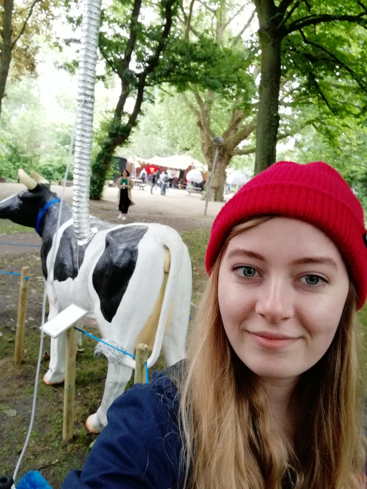

Assignments
Vrijdag 1 juni ben ik samen met mijn klasgenoten en docenten naar Robotanica geweest in de Tolhuistuin in Amsterdam. Robotanica is een expositie over het volgende: ‘Kunnen we de leefomstandigheden van dieren verbeteren door middel van technologieën als VR? Wanneer diersoorten uitsterven, kunnen we ze dan vervangen door technologische plaatsvervangers? Kunnen robots helpen om schade aan het milieu te herstellen? Hoe kunnen we ons voorbereiden op een nieuwe wildernis met organisch-technologisch leven? Staan we aan de vooravond van een nieuwe evolutie?’ Op de expositie waren verschillende werken te zien die inspelen op dit onderwerp. Het werk wat mij het meest aansprak is ‘Cow & Co’, gemaakt door A. Eggers & O. Roeders. De installatie bestaat uit een koe met een grote ballon op z’n rug en een melkmachine. Dit werk gaat over de band tussen de huidige band tussen de koe en de mens en hoe dit anders kan. Het beeld van de vrolijke koe in de wei komt niet overeen met de harde realiteit. Het idee achter ‘Cow & Co’ is dat de koeien het eigen heft in handen nemen en zelfstandig ondernemer worden. De koeien lopen rond in de buurt van stedelijke gebieden en bieden zelf hun melk aan. De koeien hebben elk hun eigen melkmachine en welzijnssensor waarmee ze hun klanten kunnen beoordelen. De koeien drijven zelf de melkmachine aan met het methaangas wat te uitstoten. Online zijn de koeien te tracken zodat de klanten precies weten waar de koeien zich bevinden. De mens kan direct digitaal de koe betalen voor de melk en met dat geld kunnen de koeien het land betalen waar ze zichzelf mee kunnen voeden. Om de koe heen stonden verschillende borden met uitleg hoe je het beste de koe kunt benaderen en hoe je ze op hun gemak kunt stellen. Ik vind dit werk zo indrukwekkend omdat het het contrast toont tussen de ideale situatie en de schrijnende werkelijkheid. In het echt stoppen we koeien in megastallen en hebben ze belabberde leefomstandigheden en bij ‘Cow & Co’ moeten we zo zachtaardig mogelijk omgaan met de koe en hebben ze alle ruimte en zelfstandigheid die ze zich maar kunnen wensen. Helaas lijkt mij het concept wel vrij onrealistisch, maar het is een mooi streven naar een betere samenwerking tussen koe en mens. Cow & Co
Reflect
Ik vond Robotanica best een interessante tentoonstelling. Vooral omdat het de mogelijkheden van technologie in de natuur laat zien en hoe wij daar in de toekomst mee om kunnen gaan. Ik vond de variatie van de tentoongestelde projecten erg leuk, veel objecten waren ook interactief. En sommige werken zetten je weer aan het nadenken, zoals bovengenoemde Cow & Co. Het nadeel is dat ik veel projecten ook wat vergezocht en nietszeggend vond. Het is leuke tentoonstelling om een uurtje rond te kijken, maar niet iets om over naar huis te schrijven.